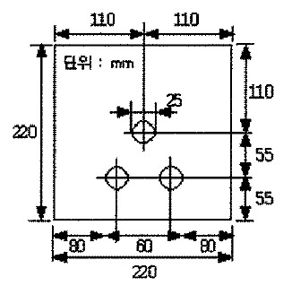
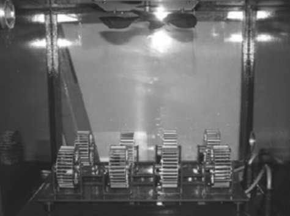
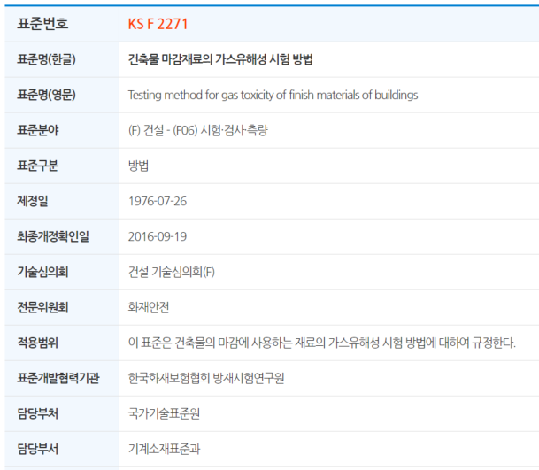

현재 국내 건축법에서는 가스유해성시험(KS F 2271)을 통하여 재료의 가스안정성을 평가하도록 되어 있으며, 해당 규정은 시험용 흰 쥐를 연소가스에 노출시켰을 때 나타나는 흰 쥐의 평균행동정지시간(min)을 측정하는 것입니다.

그림1. 가스유해성시험 시험체 크기
시험체는 그림1과 같은 크기로 절단 후 시험체의 표면에서 뒷면으로 관통하는 지름 25mm인 구멍을 3개 뚫어 시험에 사용합니다. 전 처리로 35~45℃의 건조기 안에서 24시간 이상 건조한 후, 데시케이터 안에서 24시간 이상 유지한 후 시험합니다.
시험방법은 시험체의 열을 받는 면의 크기가 가로, 세로 각각 180mm로 하고 처음에는 부열원으로 3분간 가열 한 후 다시 주열원으로 3분간 가열하는데,
가열시간 6분 동안 피검 상자의 배기구는 개방하고, 가열후에는 피검 상자의 가스가 배출되지 않도록 배기를 차단합니다.

피검상자내 8개의 회전바구니
가열시험은 시작할때 피검 상자내의 온도를 30℃로 하고, 시험용 흰쥐(ICR계 암놈, 5주령, 18~22g)를 1마리씩 넣은 회전 바구니 8개를 피검상자에 넣습니다.
가스유해성은 가열시작 후 15분 동안 개개의 시험용 흰쥐마다 행동을 정지할 때 까지의 시간을 측정하고 시험용 흰쥐의 형균행동 정지시간을 계산하여 시험체 2개에 대한 각각의 흰쥐 평균 행동 정지 시간의 값이 9분 이상일 경우 합격입니다.
※참고1) 건교부 고시 제2006-476호 이후부터는 난연성능 등급이 불연재료, 준불연재료, 난연재료로 변경되었으며, 각각의 시험방법도 KS F ISO 1182에 따른 불연성시험, KS F ISO 5660-1에 따른 열방출률시험, 그리고 각 등급 공통적으로 KS F 2271에 따른 가스유해성 시험방법이 적용되도록 개편되었습니다.
통 합 검 색 표준 ·인증 정보를 한눈에! 인기검색 KS 초음파 플라스틱 부식 종이 터치 1단 난간 품목별 인증 길잡이 품목별로 필요한 정부 인증 및 관련기준을 한눈에 보여드립니다. 분야별 정보검색 인증제도 국가표준 기술기준 TBT통보문 인증지원 KS인증기관조회 KS인증업체확인 표준제정·개정신청 단체표준종합정보센터 표준용어사전
standard.go.kr
※참고2) 다만, 이러한 실험 방법은 연소가스의 유해성에 대한 평가에는 적당하지만 성분 중 어느 유해 가스가 얼마의 농도로 흰 쥐의 행동정지시간에 영향을 미쳤는지에 대한 정량적인 평가가 어려울 수 있다는 한계가 있다는 지적이 학계에서는 거론되고 있습니다

준불연 가등급 EPS 단열재 DK보드
건축용 / 외단열용 / 판넬용
문의 1855-2240